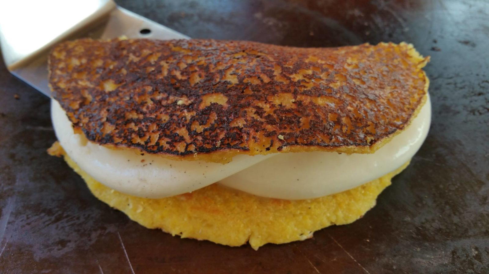
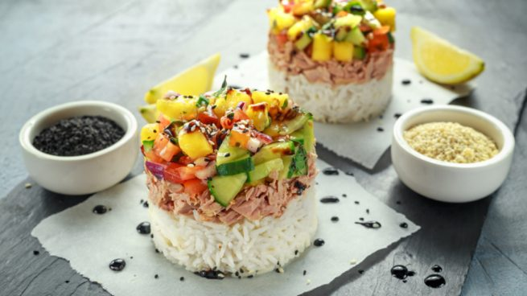

- Pasta con alubias y salsa de tomate.
- Croquetas vegetales al horno.
- Patatas gajo picantes.
- Sopa-caldo con panceta y col china.
- Sopa de verduras con champiñones y apio.
Cachapa Venezolana
09 de Julio del 2019
La cachapa es uno de los platos estrella de la comida de Venezuela y Colombia. Consiste en una torta de maíz de textura rústica que se elabora con maíz tierno y unos pocos ingredientes más. Se cree que se originó en la zona central de Venezuela, y que fue elaborada por primera vez por los indígenas. A esta torta de maíz se la conoce como cachapa de budare. El budare es una plancha circular de arcilla o hierro fundido sobre la que se lleva a cabo la cocción de las cachapas. Una vez cocinadas, se sirven calientes acompañadas de ingredientes como el queso, la mantequilla o la margarina, el jamón…
Escribe un Comentario....
MARIA_23: Se ve Delicioso

JHOTEIX: Yo queiro un este fin de semana, me provoco comerlo de almuerzo
MICHELLYSR: Yo lo quisiera con tajadas y refresco CocaCola
Arroz con Atún
12 de Julio del 2019
Arroz con atún y fideos. Una estupenda receta para compartir.
En una olla caliente, agregar aceite y sofreír los fideos, hasta que se doren, luego, agregar la cebolla el ajo, las arvejas, la zanahoria, el arroz y la sal.
Luego adicionar el agua y dejar hervir la preparación, dejar secar a fuego lento y tapar la olla hasta que el arroz esté cocido por completo. Una vez finalizado el proceso, agregar el atún Van Camp’s y reservar a fuego lento.
Aparte en una sartén caliente, agregar el aceite del atún y los huevos revueltos para hacer una tortilla delgada, una vez que esté cocida, cortar la tortilla en tiras largas y agregárselas al arroz con atún y fideos.
A esta preparación se puede adicionar salsa soya al gusto.Escribe un Comentario....
JCESAR: Con un poquito de Perejil y Oregano queda Extremadamente Delicioso